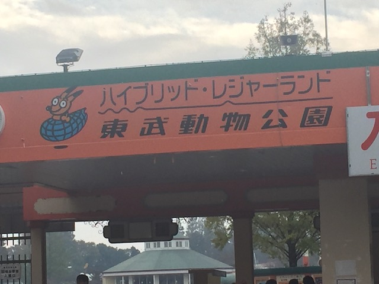
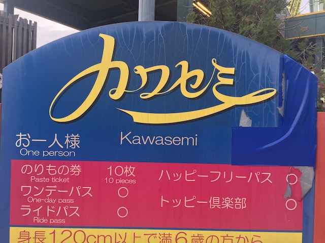
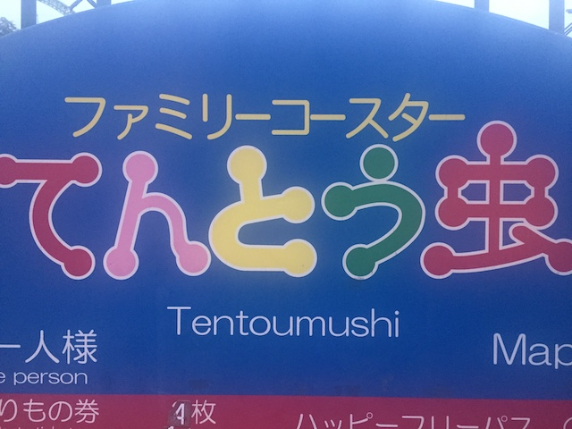
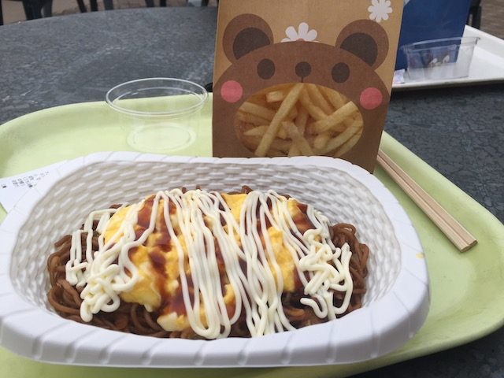
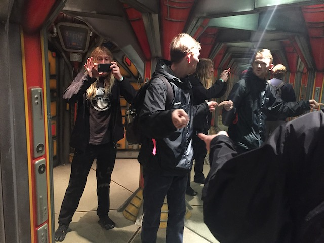

| |
Tobu Zoo Review

Tobu Zoo is a fun little park. It is another one of those animal parks, where the park is half regular theme park, and half zoo. So it's a place where you can spend some time riding cool roller coasters and also et a chance to see some cool animals. And Tobu Zoo is....a decent one. The theme park half of the park is pretty cool. A generic, but still fairly fun amusement park, with one really good kickass roller coaster (There used to be two of them), So that alone is gonna draw in a lot of coaster enthusiasts since...Intamin Mega-Lites are freaking awesome! Love those rides! The rest of the theme park is fairly standard and generic. Nothing special really stands out, but it's still fun. But then again, what most people think of when they think of Tobu Zoo is....the animals. After all, the park is called Tobu Zoo (in English that is. Not sure of its real name, and I know I can't read or pronounce it). The zoo park is....nothing special. It seemed to be a fairly decent sized zoo. At least by theme park zoo standards. And...it's big. You're gonna have quite a bit of walking in both sections, let alone getting from the theme park section to the zoo section.
Rollercoasters
There is a link to a review of all the Rollercoasters at Tobu Zoo.
Top Coasters
Kawasemi Review

Kiddy Coasters
Tentomushi Review

Past Coasters
Regina Review

Flat Rides
Here are all of the flat rides at Tobu Zoo. The only one I wound up riding were the chairswings. Fun, but....meh. Standard ordinary chairswings. There's a few other flat rides that they have at Tobu Zoo. The problem however is...they're fairly bland. They have a magic carpet, that's fun. But aside from that, they also have a music express, teacups, giant ferris wheel, and two carousels. Yeah, the flat ride collection here is fairly dull.
Dark Rides
Now some people would try and argue that Tobu Zoo has no dark rides. And...that's essentially true. However, they do have some sort of 3D Show. I don't know what it is. I never saw it. All I know is that it exists. And...it counts. So...just acknowledging it. That's all.
Water Rides
There are no water rides at Tobu Zoo.
Dining
All right. The food at Tobu Zoo is...I guess it's OK. The food that they seem to serve at the park are standard Japanese noodles. Well, that's at least what we got. And....the noodles themselves were good. The only problem was that stupid me didn't look what he was ordering and....I wound up getting the noodles with one of my least favorite foods (SUPER UNPOPULAR OPINION). But that's my fault for being an idiot not looking at the photos of the food he's about to order. And the rest of the world likes it. So let's just focus on the noodles themselves. Pretty damn good. As for the rest of the food here, they seem to have...a decent selection. Standard theme park food. Hamburgers, Hot Dogs, Pizza, and apparently, there's an Italian resteraunt here. Seems to be a mix of standard theme park food and local Japanese food. So yeah. You should get some good food at Tobu Zoo.

Love the bear on the fry bag.
Theming and Other Attractions
Here are the reviews of all the other stuff at Tobu Zoo. As far as theming goes, there's pretty much none. I guess you could call a couple of the animal statues theming, as well as a little sprinkle of random theming here and there. But let's keep it real. This is a pure amusement park. There is NO theming at Tobu Zoo. But moving onto other stuff to do, as there is quite a lot to do here. First off, let's start out with one of the most....interesting and unique attractions out there. Galaxy Walkers is a mirror maze. Sort of. You see, it's a mirror maze, except it's themed to...saving the world I guess. I don't know. The whole thing is in Japanese, and since I don't speak the language, I failed misreably. And Japanese people are probably shaking their heads at me right now. But nonetheless, I still had a lot of fun doing that! And that's not even the biggest other thing. That would be...what the park is most known for. It's in the freaking name! Yep. It's time to talk about the zoo-aspect of Tobu Zoo. Judging Tobu Zoo solely as a zoo, it seemed....all right I guess. It was completely dark when I went and explored the zoo portion. So I couldn't see too much. I saw lions, zebra, deer, elephants, all sort of standard zoo animals. Well....except for deer. That is NOT a typical zoo animal. The one animal that really stood up was the Andean Condor. Cool for most people, but considering that I've seen condors up close, I'm spoiled (plus, I saw them in one of the worlds best cliff jumping spots). But you have to remember, I both went at night, and was just casually strolling through a zoo. Someone actually going for the animals is probably going to have a much better time. But all in all, it's not a bad zoo. Are there better zoos out there? Yes. A lot of the local zoos around me are a lot better, and even another animal park, like say....Busch Gardens Tampa is better. But it's still fairly good. It has a decent amount of animals, and....it seemed like they were taking good care of them. But again, my exposure was limited. And I can certainly think of worse zoos out there for sure. Also, this really only applies in December (and November, when I went, cause Japan celebrates Christmas a month early), but their Christmas Festival, Winter Illumination, is really good. Yeah, there are better Christmas Festivals at other Japanese parks, this is still a fantastic Christmas Festival totally worth checking out if you're at the park at the right time of year.

Super cool mirror maze mixed in with Simon.
 Elephant just sitting and chilling over at Tobu Zoo.
Elephant just sitting and chilling over at Tobu Zoo.
In Conclusion
Tobu Zoo is a really fun animal park. It is a decent theme park, with a couple cool rides. OK, most of the rides themselves are fairly generic. Standard rides that you would find at any amusement park. However, the park does stand out to coaster enthusiasts simply because Kawasemi is so freaking good! I mean, they have an Intamin Mega-Lite here! And true, there are better coasters out there, but especailly for its size! This thing is a freaking airtime machine! And Mega-Lites are freaking awesome (as mentioned in my Kawasemi Review)! Also, its mirror Simon maze is really cool. And on top of that, it has a good zoo attached to the park and included in admission, that does host a decent assortment of animals to look at. Now I will admit that I have one main criticism with the park. It needs more. And it's heading in the wrong direction. You see, when I visited, the park also had a wooden coaster named Regina, and it was pretty good. Not as good as Kawasemi, but still a decent and fairly fun ride. However, they sadly got rid of that since my Japan trip. And that's really sad since...it wasn't even that long ago! And on top of that, the park appeared that it used to have an Intamin 2nd Generation Drop Tower. And then there was that Togo Looping Mouse that was torn down like a decade before I went (that thing looked fun. Luckily, a clone of it still exists at an obscure park in Japan). The park desperately needs to add something new. Have them add some big new attraction, and this'll really stand out. But I'm getting a feeling that the park really wants to focus all of their energy on the zoo aspect of Tobu Zoo, which....fine I guess. But even so, they do have Kawasemi, which should be enough for a coaster enthusiast to swing by while visiting Japan.
Enthusiast FAQs.
*Are there kiddy coaster restrictions? - Nope. You can ride Tentomushi. You can also ride the other kiddy powered "NOT A CREDIT" pseudo-credit.

Tips
*Marathon Kawasemi! That ride is so good!
*Check out the animals in the zoo.
*Make sure to do Galaxy Walkers.
*They have reduced price admission if you go after 3 pm (at least they did when I went).
*Do NOT miss Kawasemi.
*Have Fun!
Theme Park Category:
Animal Park
Location
Minami, Saitama, Japan
Last Day Visited
November 4, 2018
Video
I unfortunetly did not shoot enough video to make a Tobu Zoo video.
Complete Update List
2018
JAPAN 2018!!! =)
Here's a link to the parks website.
Home
|